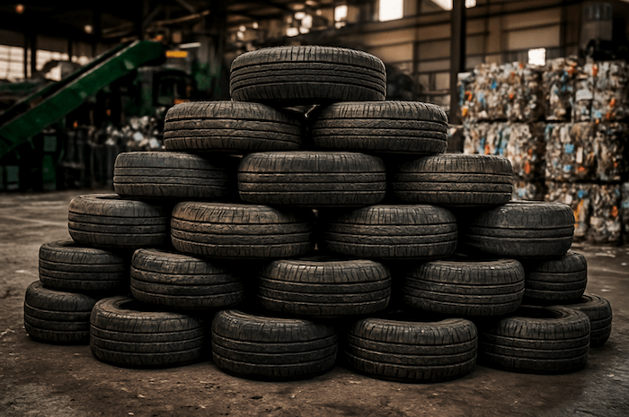

Junk Removal in Austin
Same-day service. Upfront pricing. We haul it all.
We Take It. You Relax.
Got junk? We'll take it. Furniture, appliances, yard waste, construction debris, electronics — we haul almost anything. Call or text, get a price, and we're there.
What We Take:
Sofas, couches, chairs
Fridges, washers, dryers
Mattresses & box springs
Yard waste & tree limbs
Construction debris
TVs, computers, e-waste
Call (512) 436-6298
